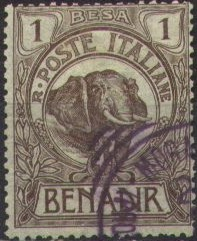
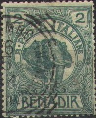
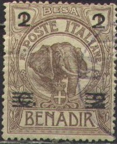
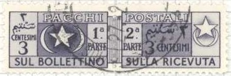
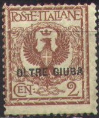

Benadir - Italian Somaliland - Somalie Italienne
Note: on my website many of the
pictures can not be seen! They are of course present in the
catalogue;
contact me if you want to purchase it.
value in besa or anna


1 b brown (elephant) 2 b green (elephant) 1 a red (lion) 2 a orange (lion) 2 1/2 a blue (lion) 5 a yellow (lion) 10 a lilac (lion)
These stamps have perforation 14 and watermark 'Crown'.
Value of the stamps |
|||
vc = very common c = common * = not so common ** = uncommon |
*** = very uncommon R = rare RR = very rare RRR = extremely rare |
||
| Value | Unused | Used | Remarks |
| 1 b | *** | *** | |
| 2 b | *** | *** | |
| 1 a | *** | *** | |
| 2 a | R | R | |
| 2 1/2 a | *** | *** | |
| 5 a | R | R | |
| 10 a | *** | *** | |
Surcharged with c(entesimi) or lira
bars on 2 c on 1 b brown 2 c on 1 b brown 5 c on 2 b green 10 c on 1 a red 15 c on 2 a yellow 'Centesimi 15' on 5 a orange 20 c on 2 a orange 25 c on 2 1/2 a blue '40 Centesimi' on 10 a lilac 50 c on 5 a yellow '1 LIRA 1' on 10 a lilac
Value of the stamps |
|||
vc = very common c = common * = not so common ** = uncommon |
*** = very uncommon R = rare RR = very rare RRR = extremely rare |
||
| Value | Unused | Used | Remarks |
| bars on 2 c on 1 c | c | c | |
| 2 c on 1 c | vc | vc | |
| 5 c on 2 b | c | c | |
| 10 c on 1 a | * | * | |
| 15 c on 2 a | * | * | |
| 15 c on 5 a | RRR | RRR | |
| 20 c on 2 a | * | * | |
| 25 c on 2 1/2 a | * | * | |
| 40 c on 10 a | RR | R | |
| 50 c on 5 a | ** | ** | |
| 1 L on 10 a | ** | ** | |
Double surcharged
5 c on 50 c on 5 a orange 20 c on 1 L on 10 a lilac
Value of the stamps |
|||
vc = very common c = common * = not so common ** = uncommon |
*** = very uncommon R = rare RR = very rare RRR = extremely rare |
||
| Value | Unused | Used | Remarks |
| 5 c on 50 c on 5 a | *** | *** | Old value cancelled with three lines |
| 20 c on 1 L on 10 a | ** | ** | Old value cancelled with a line |
Double surcharged (second surcharge in BESA, 1922-1923)

'2' and bars on 2 c on 1 b brown '3' and bars on 2 c on 1 b brown '3 3' on 5 c on 2 b green '5 BESA 5' and bars on 50 c on 5 a yellow '6 BESA' on 10 c on 1 a red '6 6' and bars on 5 c on 2 b green '9 BESA' on 15 c on 2 a orange '15 BESA' on 25 c on 2 1/2 a blue '18 BESA 18' and bars on 10 c on 1 a red '20 BESA 20' on 15 c on 2 a orange '25 BESA 25' on 15 c on 2 a orange '30 BESA 30' on 25 c on 2 1/2 a blue '30 BESA' on 50 c on 5 a yellow '60 BESA' on 1 L on 10 a lilac '60 BESA 60' and bars on 1 L on 10 a lilac '1 RUPIA 1' on 1 L on 10 a lilac
Value of the stamps |
|||
vc = very common c = common * = not so common ** = uncommon |
*** = very uncommon R = rare RR = very rare RRR = extremely rare |
||
| Value | Unused | Used | Remarks |
| 2 on 2 c on 1 b | c | c | 1923 |
| 3 on 2 c on 1 b | c | * | 1923 |
| 3 b on 5 c on 2 b | c | * | 1922 |
| 5 b on 50 c on 5 a | * | * | 1923 |
| 6 b on 10 c on 1 a | * | * | 1922 |
| 6 on 5 c on 2 b | * | * | 1923 |
| 9 b on 15 c on 2 a | * | * | 1922 |
| 15 b on 25 c on 2 1/2 a | * | * | 1922 |
| 18 b on 10 c on 1 a | * | * | 1923 |
| 20 b on 15 c on 2 a | ** | ** | 1923 |
| 25 b on 15 c on 2 a | ** | ** | 1923 |
| 30 b on 25 c on 2 1/2 a | ** | ** | 1923 |
| 30 b on 50 c on 5 a | ** | ** | 1922 |
| '60 BESA' on 1 L on 10 a | *** | *** | 1922 |
| '60 BESA 60' and bars on 1 L on 10 a | *** | *** | 1923 |
| 1 R on 1 L on 10 a | *** | *** | 1923 |
Surcharged stamps with bars through surcharge (1926)
2 c on 1 b brown 5 c on 2 b green 10 c on 1 a red 15 c on 2 a orange 20 c on 2 a orange 25 c on 2 1/2 a blue 50 c on 5 a orange 1 L on 10 a lilac
Value of the stamps |
|||
vc = very common c = common * = not so common ** = uncommon |
*** = very uncommon R = rare RR = very rare RRR = extremely rare |
||
| Value | Unused | Used | Remarks |
| 2 c on 1 b | c | c | |
| 5 c on 2 b | c | c | |
| 10 c on 1 a | c | c | |
| 15 c on 2 a | c | * | |
| 20 c on 2 a | * | * | |
| 25 c on 2 1/2 a | * | * | |
| 50 c on 5 a | * | * | |
| 1 L on 10 a | * | * | |
Stamps with overprint 'Marca Bollo' are fiscal stamps. I have seen this overprint on "25 BESA 25" on 15 c on 2 a orange.
When the stamps were first introduced, apparently no post office existed in Benadir. Source: The Philatelic Record 1902, page 96: they were intended to be sold to stamp collectors "..... and they would form a source of certain revenue to the Societe at the expense of the numerous collectors of stamps, who would not fail to secure a philatelic novelty.". The Societe is the 'Societié Anonyme de Benadir'.
10 + 5 c red 15 + 5 c grey 20 + 5 c orange 20 on 15 + 5 c grey
Value of the stamps |
|||
vc = very common c = common * = not so common ** = uncommon |
*** = very uncommon R = rare RR = very rare RRR = extremely rare |
||
| Value | Unused | Used | Remarks |
| 10 + 5 c | * | * | |
| 15 + 5 c | * | * | |
| 20 + 5 c | * | * | |
| 20 on 15 + 5 c | * | * | |
3 b on 5 c green 6 b on 10 c red 9 b on 15 c grey 15 b on 25 c blue
6 b on 20 c olive and brown 13 b on 30 c red and brown 20 b on 50 c violet and brown 30 b on 1 L blue and brown
3 b on 10 c green (red overprint) 13 b on 30 c violet (red overprint) 20 b on 50 c red 30 b on 1 L blue 1 R on 2 L brown 3 R on 5 L black and blue (red overprint)
6 b on 10 c red and black 9 b on 15 c green and black 13 b on 30 c black and grey 20 b on 50 c brown and black 30 b on 1 L blue and black 3 R on 5 L violet and black
6 b + 3 b on 20 c + 10 c blue and brown 13 b + 6 b on 30 c + 15 c brown and light brown 15 b + 8 b on 50 c + 25 c violet and brown 18 b + 9 b on 60 c + 30 c red and brown 30 b + 15 b on 1 L + 50 c blue and brown (red overprint) 1 R + 50 b on 5 L + 2.50 L red and brown (red overprint)
60 c red 1 L blue 1.25 L blue (1926)
20 c green 40 c violet 60 c red
5 c + 5 c brown 10 c + 5 c olive 20 c + 5 c green 40 c + 5 c red 60 c + 5 c orange 1 L + 5 c blue
A similar stamp for Tripolitania, Eritrea also issued similar
stamps.

5 c green (1927) 7 1/2 c brown (1928) 10 c red (1927) 20 c brown (1927) 25 c green (1927) 30 c black (1930) 50 c brown and black (1928) 50 c violet (1930) 60 c red (1927) 75 c red 1 L brown and green (1927) 1.25 L blue 1.75 L brown (1928) 2.50 L blue and red 5 L blue and red 10 L black and red
2 c red-brown
Reduced sizes
40 c + 20 c brown and black (castle of St.Angelo) 60 c + 30 c red and brown (aquaduct of Claudius) 1.25 L + 60 c blue and black (Capitol with Forum Romanum) 5 L + 2.50 L green and black (Porta del Popolo) Changed values and colours (1928) 30 c + 10 c red and black 50 c + 20 c lilac and black (red overprint) 1.25 L + 50 c brown and blue (red overprint) 5 L + 2 L olive and black (red overprint) Changed values and colours (1930) 30 c + 10 c green (two shades on one stamp) 50 c + 10 c green and lilac (red overprint) 1.25 L + 30 c brown and red-brown (red overprint) 5 L + 1.50 L blue and green (red overprint)
20 c violet 50 c orange 1.25 L blue
20 c + 5 c green 30 c + 5 c red 50 c + 10 c violet 1.25 L + 20 c blue
20 c green (red overprint) 25 c orange (blue overprint) 50 c + 10 c red (blue overprint) 75 c + 15 c brown (red overprint) 1.25 L + 25 c lilac (design as 20 c, red overprint) 5 L + 1 L blue (design as 75 c, red overprint) 10 L + 2 L brown (red overprint)
20 c green 50 c + 10 c orange 1.25 L + 25 c red
20 c violet (red overprint) 25 c green (red overprint) 50 c black (red overprint) 1.25 L blue (red overprint) 5 L + 2 L red (blue overprint)
50 c + 20 c brown 1.25 L + 20 c blue 1.75 L + 20 c green 2.55 L + 50 c violet 5 L + 1 L red
15 c violet (red overprint) 20 c brown (blue overprint) 25 c green (red overprint) 30 c brown (blue overprint) 50 c lilac (red overprint) 75 c red (blue overprint) 1.25 L blue (red overprint) 5 L + 1.50 L lilac (red overprint) 10 L + 2.50 L brown (blue overprint)
20 c brown ('SOMALIA' blue)
25 c green ('SOMALIA' red)
30 c brown ('SOMALIA' blue)
50 c violet ('SOMALIA' blue)
75 c black ('Somalia' red)
1.25 L blue ('SOMALIA' red)
5 L + 2.50 L brown ('Somalia' blue)
25 c green (red overprint) 50 c violet (red overprint)

5 c brown (lighthouse) 7 1/2 c violet (design as 5 c) 10 c black (design as 5 c) 15 c olive (design as 5 c) 20 c red (tower) 25 c green (design as 20 c) 30 c brown (design as 20 c) 35 c blue (government building in Mogadiscu) 50 c violet (design as 35 c) 75 c red (design as 35 c) 1.25 L blue (termite hill with man) 2.75 L orange (design as 1.25 L) 2 L red (design as 1.25 L) 2.55 L blue (bird) 5 L red (design as 2.55 L) 10 L violet (hyppopotamus) 20 L green 25 L blue Overprinted "ONORANZE AL DUCA DEGLI ABBRUZZI" and colours changed 10 c brown 25 c green (red overprint) 50 c violet 1.25 L bue (red overprint) 5 L violet (red overprint) 10 L red 20 L blue (red overprint) 25 L green (red overprint)
Some values were re-issued in 1950, but now with inscription "SOMALIA" on top: 1 c black (tower), 5 c red (bird), 6 c violet (building), 8 c green (tower), 10 c green (building), 20 c blue (bird), 35 c red (tower), 55 c blue (building), 60 c violet (bird), 65 c brown (tower) and 1 S red (building).
Woman with child 5 c green 10 c brown 20 c red 50 c violet 60 c red-brown 1.25 L blue Airmail, river scene and earoplane 25 c blue and red 50 c green 75 c brown and red Airmail, leopard watching aeroplane 80 c brown 1 L red 2 L blue
25 c + 10 c olive 50 c + 10 c brown 75 c + 15 c red 80 c + 15 c brown 1 L + 20 c brown 2 L + 20 c blue 3 L + 25 c violet 5 L + 25 c orange 10 L + 30 c lilac 25 L + 2 L green
King standing
7 1/2 c + 7 1/2 c violet 15 c + 10 c black 20 c + 10 c red 25 c + 10 c green 30 c + 10 c brown 50 c + 10 c violet 75 c + 15 c red 1.25 L + 15 c blue 1.75 L + 25 c orange 2.75 L + 25 c blue 5 L + 1 L red 10 L + 1.80 L brown King on horse (larger size)
25 L + 2.75 L brown and red-brown
25 c green (palm tree and aeroplane) 50 c brown (woman in field with aeroplane) 60 c orange (aeroplane over trees) 75 c brown 1 L blue (child watching aeroplane) 1.50 L violet (design as 25 c) 2 L grey (design as 50 c) 3 L red (design as 1 L) 5 L green (design as 60 c)
Parcel post stamps consist of two parts, one for the parcel and one for the receipt (cancelled specimens should always be separated!). The first parcel stamps for Somalia were issued in 1920, by overprinting parcel stamps of Italy with "SOMALIA ITALIANA".
5 c brown (black or red overprint) 10 c blue (black or red overprint) 20 c black (black or red overprint) 25 c red (black or red overprint) 50 c orange (black or red overprint) 1 L violet (black or red overprint) 2 L green (black or red overprint) 3 L yellow (black or red overprint) 4 L black (black or red overprint) 10 L lilac (black or red overprint) 12 L brown (black or red overprint) 15 L grey (black or red overprint) 20 L lilac (black or red overprint)
The red overprints were issued in 1926 (the overprint is of a slightly different type). The values 10 L to 20 L were issued in 1926.
Surcharged 'BESA' or 'RUPIE' on left part (except 3 B on 5 c) and 'BESA' or 'RUPIE' with value on right part (1923)

3 B on 5 c brown (value on left side as well) 5 B on 5 c brown 10 B on 10 c blue 25 B on 25 c red 50 B on 50 c orange 1 R on 1 L violet 2 R on 2 L green 3 R on 3 L yellow 4 R on 4 L black
25 c red 50 c orange 1 L violet 2 L green 3 L yellow 4 L black
5 c brown (red or black overprint) 10 c blue 25 c red (1931) 30 c blue 50 c yellow (1931) 60 c red 1 L violet (1931) 2 L green (1931) 3 L light brown (red or black overprint) 4 L grey (red or black overprint) 10 L lilac (1935) 20 L lilac (1934)

1 c lilac 3 c violet 5 c lilac 10 c orange 20 c brown 50 c green 1 Somalo violet 2 Somali brown 3 Somali blue
5 c orange and red 10 c orange and red 20 c orange and red 30 c orange and red 40 c orange and red 50 c orange and red 60 c orange and red 1 L blue and red 2 L blue and red 5 L blue and red 10 L blue and red
Value of the stamps |
|||
vc = very common c = common * = not so common ** = uncommon |
*** = very uncommon R = rare RR = very rare RRR = extremely rare |
||
| Value | Unused | Used | Remarks |
| 5 c | * | * | |
| 10 c | R | *** | |
| 20 c | *** | *** | |
| 30 c | * | * | |
| 40 c | *** | *** | |
| 50 c | *** | *** | |
| 60 c | *** | *** | |
| 1 L | RRR | RRR | |
| 2 L | RRR | RRR | |
| 5 L | RRR | RRR | |
| 10 L | RRR | RRR | |
5 c orange and red 10 c orange and red 20 c orange and red 30 c orange and red 40 c orange and red 50 c orange and red 60 c orange and red 1 L blue and red 2 L blue and red 5 L blue and red 10 L blue and red
A small amount of stamps was overprinted at the bottom (instead of the usual overprint at the top) in 1920.
Value of the stamps |
|||
vc = very common c = common * = not so common ** = uncommon |
*** = very uncommon R = rare RR = very rare RRR = extremely rare |
||
| Value | Unused | Used | Remarks |
| 5 c | c | * | |
| 10 c | * | * | |
| 20 c | * | * | |
| 30 c | * | * | |
| 40 c | ** | ** | |
| 50 c | ** | ** | |
| 60 c | ** | ** | |
| 1 L | *** | *** | |
| 2 L | *** | *** | |
| 5 L | R | R | |
| 10 L | *** | *** | |
1 B on 5 c orange 2 B on 10 c orange 3 B on 20 c orange 5 B on 30 c orange 10 B on 40 c orange 20 B on 50 c orange 40 B on 60 c orange 1 R on 1 L blue

5 c orange and black 10 c orange and black 20 c orange and black 30 c orange and black 40 c orange and black 50 c orange and black 60 c orange and black 1 L blue and black 2 L blue and black 5 L blue and black 10 L blue and black
5 c brown 10 c blue 20 c red 25 c green 30 c orange 40 c black 50 c violet 60 c blue Slightly different design 1 L orange 2 L green 5 L violet 10 L blue 20 L red
Later issue, the following values exist: 1 c violet, 2 c blue, 5
c blue, 10 c lilac, 40 c violet, 1 S brown
Outre-Juba
Oltre Giuba (or Jubaland or Djubaland) issued stamps from 1925 onwards. It is located west of the Juba River in East Africa. Oltre Giuba was ceded by Great Britain to Italy in 1924. In 1926 it was incorporated with Italian Somaliland (Somalia). In 1936 it joined Italian East Africa.

1 c brown 2 c brown 5 c green 10 c red 15 c black 20 c orange 25 c blue 30 c brown 40 c brown 50 c violet 60 c red 1 L green and brown 2 L green and orange 5 L blue and red 10 L black and red
20 c green 30 c black 75 c red 1.25 L blue 2.50 L green and orange
60 c red 1 L blue 1.25 L blue
20 c green 40 c violet 60 c red 1.25 L blue 5 L + 2.50 L
5 c orange 20 c blue 25 c brown 40 c red 60 c lilac 1 L blue 2 L grey
5 c + 5 c brown 10 c + 5 c grey 20 c + 5 c green 40 c + 5 c red 60 c + 5 c orange 1 L + 5 c blue
Oltre Giuba stopped issuing stamps in 1927 when it was joined to Somalia.
Oltre Giuba also issued two Express stamps (overprinted express stamps of Italy: 70 c red, 2.50 L blue and red).
Furthermore 10 postage due stamps of Italy of 1870 were overprinted with "OLTRE GIUBA" (5 c, 10 c, 20 c, 30 c, 40 c, 50 c, 60 c, 1 L, 2 L and 5 L) and were issued in 1925.

Thirteen parcel stamps of Italy also received this "OLTRE GIUBA" overprint in 1925 (5 c, 10 c, 20 c, 25 c, 50 c, 1 L, 2 L, 3 L, 4 L, 10 L, 12 L, 15 L and 20 L).
Finally six mandate stamps of Italy received the "OLTRE GIUBA" overprint in 1924 (20 c, 40 c, 50 c, 1 L, 2 L and 3 L).

{kind=link}
{kind=link}
{kind=link}